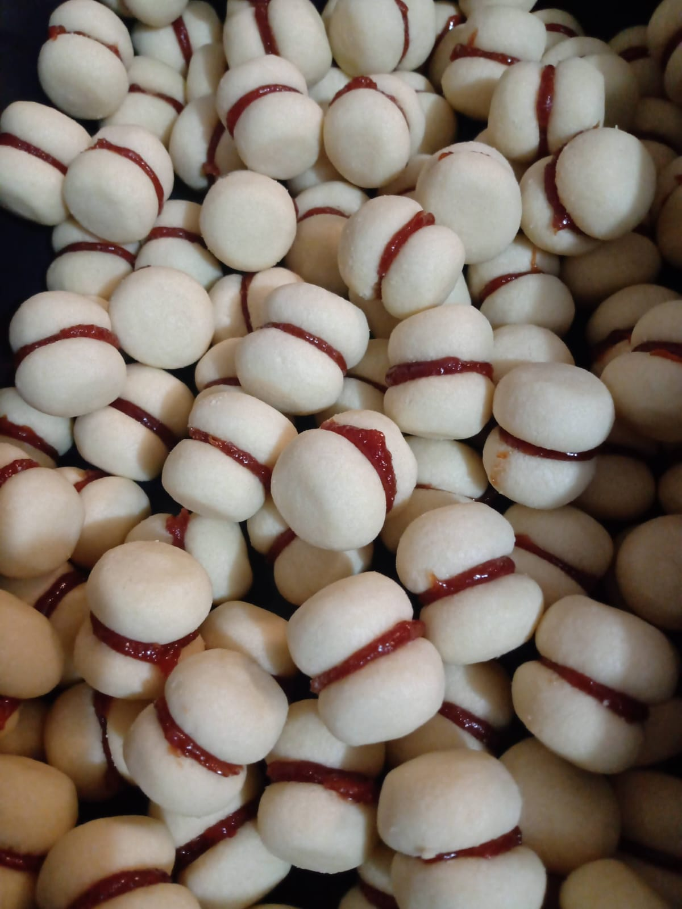

Doces Memórias
Resgatando memórias a cada mordida
Bolos Caseiros
Biscoitos
Doces
Blog e Segredos da Confeitaria
Casadinho
Massa que derrete na boca

Blog e Segredos da Confeitaria
Dicas e Truques
Combinações e Bolos Caseiros
Tabela de Conversão